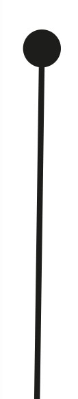

Alexandre Leroy
LP E-commerce et marketing numérique
Expériences professionnelles
Stage Webmarketeur
INWIN Pau Pyrénées
Avril 2022-Juin 2022
- Création du site de l'agence sous Wordpress
- Optimisation SEO du site de l'agence
- Recherches de leads à l'aide d'un outil de scrap
Stage Infographiste
Recto Verso
Février 2021-Mars 2021
- Réalisation de visuels sous InDesign et Illustrator
- Création d'un diaporama de présentation sous Power Point pour l'accueil de Recto Verso
Infographiste/Community manager
MJC Odos
Septembre 2020-Juin 2021
- Création du site de l'agence sous Wordpress
- Optimisation SEO du site de l'agence
- Recherches de leads à l'aide d'un outil de scrap

Lycée Gaston Crampe
2016-2019
• Obtention d’un bac Scientifique mention bien